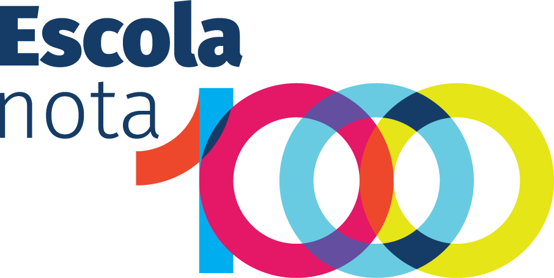

Prêmios 2026
Entendendo os critérios

Os dois prêmios
Uma nota de 0 a 20.
Premiado com 14 ou mais.
mínimo para o prêmio
APTO
05101420
2 avaliadores dão nota a cada inscrição
Se um aprova e outro reprova, entra um 3º
A menor nota cai; vale a média das outras
Prêmio Professor Nota 1000
Os critérios do professor
Professor Nota 1000
Três entregas somam 20
ATÉ
4
Projeto
Pedagógico
Pedagógico
ATÉ
6
Relatório
de Execução
de Execução
ATÉ
10
Dossiê
de Resultados
de Resultados
14 pontos
Projeto e Relatório são obrigatórios: faltando um deles, o professor é desclassificado. Dossiê de Resultados: certificados de formação enviados pelo professor; os demais dados vêm dos sistemas da SEE.
Projeto Pedagógico · até 4 pontos
Primeiro, passar pela porta. Depois, pontuar.
ELIMINATÓRIOS · TODOS OBRIGATÓRIOS
Uma área temática
entre as 16 do Apêndice I (inclusão, leitura e escrita, STEAM, equidade de gênero…)
Uma metodologia ativa
entre as 21 do Apêndice II (projetos, sala invertida, gamificação…)
Cronograma de 2 bimestres
o projeto precisa durar dois bimestres
1 ponto
Estrutura
10 a 20 páginas, ABNT e norma culta
1 ponto
Objetivos e indicadores
2 a 5 objetivos, cada um com 1 a 3 indicadores
1 ponto
Análise inicial
diagnóstico com dados que viram indicadores
1 ponto
Planejamento
ações e estratégias ligadas ao diagnóstico
Relatório de Execução · até 6 pontos
O que vale mais: provar o que foi feito
1
PONTO
2
PONTOS
1,5
PONTOS
1,5
PONTOS
Estrutura
10 a 30 páginas, ABNT, norma culta
Evidências das ações
fotos, gráficos, tabelas, planilhas, declarações
Análise final
dados iniciais × dados finais
Discussão e resultados
relação com objetivos e indicadores
Avaliado pela fidelidade ao Projeto, clareza das ações, análise dos resultados e evidências mensuráveis na turma selecionada.
Dossiê de Resultados · até 10 pontos
Dois caminhos, conforme a escola
Quadro 4 · o IEG da escola vale metade do dossiê
2Formação continuada
5IEG
1
1
1
Formação continuada
0,1 a cada 15h, de 150h até 300h
de 1,0 a 2,0
IEG
Índice de Eficiência e Gestão da escola ÷ 12
até 5,0
Meta IDE 2025
alcançou a meta da escola?
0 ou 1,0
IDEB
nota do IDEB ÷ 10
até 1,0
Crescimento IDEB
0,1 a cada 0,1 de crescimento
até 1,0
Quadro 5 · formação e fluxo pesam mais
4Formação continuada
2Preenchimento do SIAGE
4Taxa de fluxo
Formação continuada
0,2 a cada 15h, de 150h até 300h
de 2,0 a 4,0
Preenchimento do SIAGE
0,2 por mês preenchido
até 2,0
Taxa de fluxo
0,2 a cada ponto percentual acima de 80% nas turmas do professor
até 4,0
Formação continuada
150h
no Transforma Educação PB
Sem o certificado das 150h, o professor é eliminado. Vale para todos: regentes, readaptados, AEE e banda.
QUANTO MAIS HORAS EM 2026, MAIS PONTOS · TETO DE 300H
Com SIAVE/IDEB
0,1 a cada 15h
11,52
Sem SIAVE/IDEB
0,2 a cada 15h
234
150h225h300h
Contam cursos de 2026 ofertados pelo Estado, por IES reconhecidas ou instituições autorizadas pelo MEC. No Transforma, 5 cursos de 30h = 150h.
Atenção
O que tira o professor do prêmio
Plágio ou autoplágio
de edições anteriores ou prêmios similares
Texto gerado por IA
total ou parcialmente
Documento inverídico
ou dados inconsistentes com os sistemas
Menos de 150h
no Transforma Educação PB
Sem Projeto ou Relatório
os dois são obrigatórios
Sem declaração do titular
readaptados, AEE e banda (Anexo I)
Prêmio Escola Nota 1000
Os critérios da escola
Escola Nota 1000
Três entregas somam 20.
A quarta é a porta.
ATÉ
4
Projeto
de Intervenção Pedagógica
de Intervenção Pedagógica
ATÉ
6
Relatório
de Execução
de Execução
ATÉ
10
Dossiê
de Resultados
de Resultados
14 pontos
+ Dossiê de Gestão
não soma pontos, mas é eliminatório: faltou um item, a escola sai
Projeto de Intervenção Pedagógica · até 4 pontos
5 dimensões obrigatórias, 1 objetivo para cada
Recomposição das aprendizagens
Protagonismo estudantil
Equidade educacional
Objetivos de Desenvolvimento Sustentável
Fluxo e combate à evasão
1 ptEstrutura · 10 a 20 páginas, ABNT
1 ptObjetivos · 1 por dimensão, 1 a 3 indicadores
1 ptAnálise inicial · diagnóstico com dados
1 ptPlanejamento · ligado ao diagnóstico
Relatório de Execução · até 6 pontos
A mesma régua do professor: evidência vale mais
1
PONTO
2
PONTOS
1,5
PONTOS
1,5
PONTOS
Estrutura
10 a 30 páginas, ABNT, norma culta
Evidências das ações
fotos, gráficos, tabelas, planilhas, declarações
Análise final
dados iniciais × dados finais
Discussão e resultados
relação com objetivos e indicadores
Avaliado pela fidelidade ao Projeto de Intervenção, clareza das ações, análise dos resultados e evidências mensuráveis.
Dossiê de Resultados · até 10 pontos
Dois caminhos, conforme a avaliação
Quadro 3 · dados levantados pela própria SEE, sem envio de documentos
5IEG
2Meta IDE 2025
2IDEB
1
IEG
Índice de Eficiência e Gestão da escola ÷ 12
até 5,0
Meta IDE 2025
alcançou a meta da escola?
0 ou 2,0
IDEB
nota do IDEB ÷ 5
até 2,0
Crescimento IDEB
0,1 a cada 0,1 de crescimento
até 1,0
Quadro 4 · a escola envia os comprovantes
4Formação continuada
4Taxa de fluxo
2SIAGE
Formação continuada
0,2 a cada ponto percentual acima de 80% de professores com mais de 100h em 2026
até 4,0
Taxa de fluxo
0,2 a cada ponto percentual acima de 80% na média da escola
até 4,0
SIAGE
% de professores com SIAGE 100% preenchido ÷ 50
até 2,0
Dossiê de Gestão · eliminatório
7 de 7, ou a escola sai do prêmio
Formação de gestorescertificado do curso para diretores 2026 (GEFDP)
Conselhos de Classe1º e 2º períodos, com atas e declaração da GRE
Reuniões com famíliasno mínimo 3, com lista, ata e fotos
PNAE regularcontas de 2025 e do 1º semestre de 2026
PAAE regularcontas de 2025 e do 1º semestre de 2026
PROGÁS regularcontas de 2025 e do 1º semestre de 2026
PDDE aprovadoBásico, Qualidade, Equidade, PB e TEC · 2025
Escolas com diretor nomeado depois de agosto de 2026 ficam dispensadas do certificado de formação de gestores.
Atenção
O que tira a escola do prêmio
Plágio ou autoplágio
no Projeto ou no Relatório
Texto gerado por IA
total ou parcialmente
Dados inconsistentes
com os registros da SEE
Sem Projeto ou Relatório
os dois são obrigatórios
Item do Dossiê de Gestão
faltando qualquer um dos 7
Envio fora do prazo
ou por outro meio que não o site
Professor e escola
O que os dois prêmios têm em comum
IEG
÷ 12 = até 5 pontos no dossiê dos dois prêmios (com SIAVE/IDEB).
Quando a escola melhora o IEG, sobe a nota da escola e a de cada professor.
Quando a escola melhora o IEG, sobe a nota da escola e a de cada professor.
Formação continuada150h a 300h
Meta IDE 20250 ou 1
IDEB÷ 10
Crescimento IDEBaté 1
Formação dos professores% com +100h
Meta IDE 20250 ou 2
IDEB÷ 5
Crescimento IDEBaté 1
Calendário · reta final
De 16 de novembro a 23 de dezembro
16–23 nov
Envio do Relatório e dos Dossiês
até 16h30 do dia 23
25 nov
Homologação preliminar do envio
26 nov
Recurso da homologação
28 nov
Homologação final e comissão
portaria no Diário Oficial
30 nov–15 dez
Análise pela comissão
16 dez
Resultado preliminar
18 dez
Recurso do resultado
20–22 dez
Reanálise
23 dez
Resultado final
Mesmas datas para os dois prêmios. Tudo pelo site see.pb.gov.br/premios; dúvidas em premios@see.pb.gov.br.
Obrigado · boa reta final!